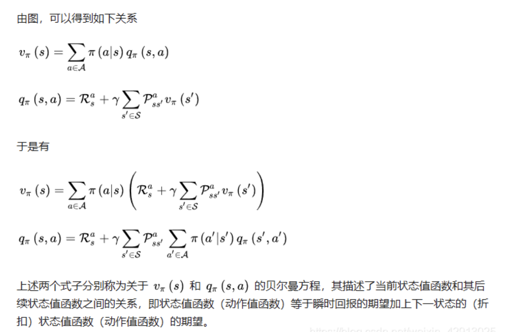
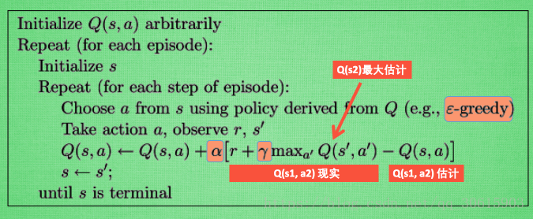
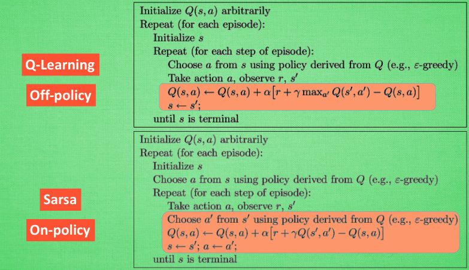

<!DOCTYPE html>
<html xmlns="http://www.w3.org/1999/xhtml" lang="zh" xml:lang="zh">
<head>
  <meta charset="utf-8" />
  <meta name="generator" content="pandoc" />
  <meta name="viewport" content="width=device-width, initial-scale=1.0, user-scalable=yes" />
  <meta name="dcterms.date" content="2021-06-14" />
  <meta name="last_modified" content="2021-06-15T16:33:09Z" />
  <meta name="published" content="June 14, 2021" />
  <title>强化学习算法面经</title>
  <link rel="stylesheet" href="/static/style.css" />
  <link rel="stylesheet" href="/static/syntax-highlighting.css" />
  <style>
      code{white-space: pre-wrap;}
      span.smallcaps{font-variant: small-caps;}
      span.underline{text-decoration: underline;}
      div.column{display: inline-block; vertical-align: top; width: 50%;}
  </style>
  <!--[if lt IE 9]>
    <script src="//cdnjs.cloudflare.com/ajax/libs/html5shiv/3.7.3/html5shiv-printshiv.min.js"></script>
  <![endif]-->
  <link rel="icon" href="/static/favicon.ico" type="image/x-icon"/> <link rel="shortcut icon" href="/static/favicon.ico" type="image/x-icon" />
  <meta name="author" content="Yanjie Ze">
  <meta name="viewport" content="width=device-width, initial-scale=1" />
  <script> window.dataLayer = window.dataLayer || []; function gtag(){dataLayer.push(arguments);} gtag('js', new Date());
  gtag('config', 'UA-116308654-1'); </script>
</head>
<body>
<a id="return" href="/">  </a>
<header id="title-block-header">
<h1 class="title">强化学习算法面经</h1>
<p class="date">June 14, 2021</p>
</header>
<h1 id="bellman方程">1 Bellman方程</h1>
<p>详细的推导可见：<a href="https://blog.csdn.net/hhy_csdn/article/details/89105908">强化学习经典算法笔记(零)：贝尔曼方程的推导</a></p>
<p></p>
<h1 id="value-iteration">2 Value Iteration</h1>
<p>这是一种model-based方法。</p>
<p>具体内容见:<a href="https://zhuanlan.zhihu.com/p/33229439">这里</a></p>
<h1 id="policy-iteration">3 Policy Iteration</h1>
<p>这是一种model-based方法。</p>
<p>具体内容见<a href="https://zhuanlan.zhihu.com/p/34006925">这里</a></p>
<h1 id="q-learning">4 Q-Learning</h1>
<p>这是一种model-free的算法，主要通过建立Q函数，Q=Q(s,a)，来进行action的决定。</p>
<p>算法：</p>
<p></p>
<h1 id="sarsa">5 sarsa</h1>
<p>sarsa算法如下，以及与Q-learning的比较。 </p>
<h1 id="sarsa与q-learning的不同on-policy与off-policy">6 sarsa与Q-learning的不同（on policy与off-policy）</h1>
<p>从算法来看, 这就是他们两最大的不同之处了. 因为 Sarsa 是说到做到型, 所以我们也叫他 on-policy, 在线学习, 学着自己在做的事情. 而 Q learning 是说到但并不一定做到, 所以它也叫作 Off-policy, 离线学习. 而因为有了 maxQ, Q-learning 也是一个特别勇敢的算法.</p>
<p>Q-learning 在learn的时候，用的是Max的方法，所以学的一定是最大的。但是在choose 的时候因为epsilon而存在随机性，下一个更新的不一定是最大回报对应的action。但每次更新的回报一定是max的。</p>
<p>Sarsa 在learn之前用epsilon choose了action，并且确定用这个action进行learn。所以learn的不一定是最大回报的。但step的action和learn的一定是同一个。</p>
<p>所以说Q-learning一定学max，更激进。</p>
<h1 id="mc和td的区别">7 MC和TD的区别</h1>
<p>详情见 <a href="https://blog.csdn.net/qq_36013249/article/details/105868739">这里</a>。</p>
<p>总结：TD结合了MC的sampling方法和DP的bootstrap方法，是空间复杂度和时间复杂度都最低的算法，是大型状态空间问题的唯一解决方案； MC收敛于样本的无偏估计，TD收敛于样本的确定等价估计</p>
<h1 id="model-based和model-free的区别">8 Model-based和Model-free的区别</h1>
<p>详情见<a href="https://blog.csdn.net/ppp8300885/article/details/78524235">这里</a>。</p>
<h1 id="policy-based和value-based的区别">9 Policy-based和Value-based的区别</h1>
<p><a href="https://www.zhihu.com/question/272223357/answer/388262439">链接</a></p>
<p>value-based 的典型算法是DQN，policy-based是policy gradient，结合这两种具体算法可能会更好的理解。</p>
<p>一、处理的action space不同：value-based适合处理的action space低维离散的,适合处理连续的action space</p>
<p>二、针对action的价值输出不同：value-based计算出每个action的价值,policy-based一般情况下只给出较价值较高的actions。</p>
<p>三、更新频率不同：value-based每个action执行都可以更新，policy-based 每个episode完成之后才能更新一次。这里可以理解成下棋的时候，value-based每下一步就学习一次，而policy-based要在一盘棋下完之后再学习。</p>
<p>那么，有没有一个算法结合value-based和action-based的优点呢？即又能处理高维、连续的action space，又能单步更新快速学习呢？那就是Actor-Critic，DDPG等算法了。</p>
<h1 id="ddpg">10 DDPG</h1>
<p>链接：<a href="https://blog.csdn.net/kenneth_yu/article/details/78478356">link</a></p>
<p></p>
<a style="color:black;font-size:2em;float:right;margin-right:30px;margin-bottom:40px;" href="../">[Return to the homepage]</a>
<script>
var code_blocks = document.querySelectorAll("pre.sourceCode");
code_blocks.forEach(function(block) {
  block.classList.add("numberSource");
  block.classList.add("numberLines");
});
</script>
</body>
</html>
